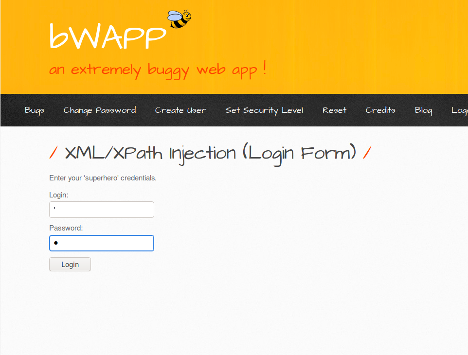
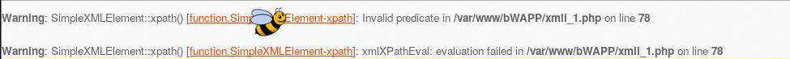
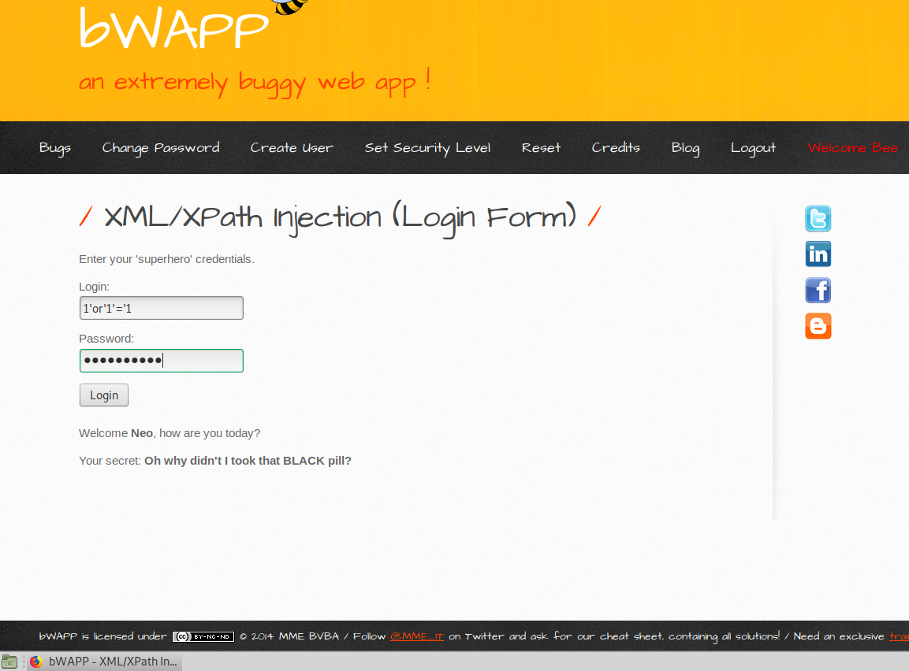
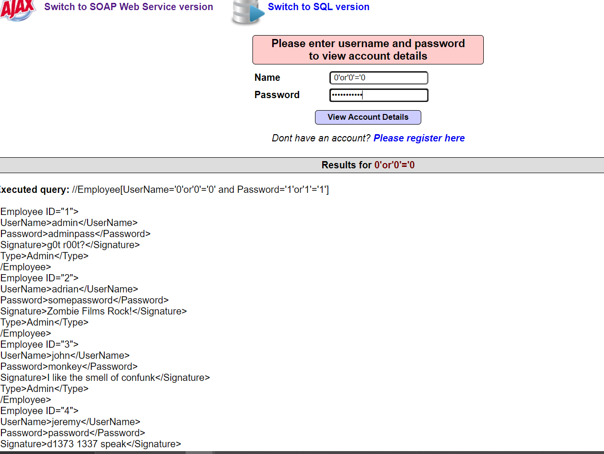

XPATH İNJECTİON
XML NEDİR ?
XML, hem insanlar hem bilgi işlem sistemleri tarafından kolayca okunabilecek dokümanlar oluşturmaya yarayan bir işaretleme dilidir. W3C tarafından tanımlanmış bir standarttır. Bu özelliği ile veri saklamanın yanında farklı sistemler arasında veri alışverişi yapmaya yarayan bir ara format görevi de görür.
XPATH NEDİR?
XPath bir XML dokümanındaki bilgiyi bulmak için kullanılan bir dildir. XPath bir XML dokümanı içindeki elemanları ve onlara ait özellikleri incelemeye yarar. XPath bir XML dokümanı yazım-sözdizim-imla kılavuzudur. XPath yol belirteçleri yardımı ile XML içinde dolaşmaya yarar.
XPATH İNJECTİON NEDİR?
Bu atak türünde bir XML sorgusunu değiştirmek temel amaçtır. Terminal bir web sayfası için giriş sağlıyorsa bu süreç XML verisi XPath sorgusu ile oluşturulmaktadır. Bu sebeple atak yapan saldırgan kasten bazı verileri XML verilerinin nasıl yapılandırıldığıyla ilgili bilgileri öğrenmek amaçlı gönderebilmekte ya da erişime kapalı verilere ulaşabilmektedir
XPATH İNJECTİON LOGİN ZAAFİYETİ UYGULAMASI
1.AŞAMA:XML enjeksiyonu olup olmadığını bulmak için SQL enjeksiyonuna benzer.
Tek tırnak kullanılırsa ve hata size XML ve XPath'ın kullanıldığını gösterir. Bunu bWAPP low
seviyesinde deneyelim.

Ve aşağıdaki hatayı alıyoruz buradan xml ve xpath kullandığı bilgisine ulaşıyoruz.
2.aşama:Burada oturum açma parolası doğrulaması olmadan, Verilere XML'deki kimlik kullanılarak aşağıdaki gibi erişilebilir.Burada zaafiyetten yararlanıp logine erişiyoruz xpath enjeksiyonu burada sqlinjectiona benzer bir şekilde gerçekleşiyor.

Yukarıdaki aşama gerçekleştirildiğinde low seviyede login xpath injectiondan yararlanarak giriş yapmış oluyoruz böylece login zaafiyeti ile giriş gerçeklemiş oluyor.

XPATH MUTİLLİDAE TEST ORTAMINDA LOGİN ZAAFİYETİ SONUCU

3.AŞAMA SONUÇ:
Giriş bilgilerinde kullanıcı adı ve kullanıcı şifresi bölümüne ‘ işareti koyarak xpath login injection var mı diye test edildi ve zaafiye rastlandı bu zaafiyetten hareketle XML’in nasıl yapılandırıldığına bakarak 1’or’1’=’1 bilgileri kullanıcı ve şifresine girilerek zaafiyet değerlendirildi ve sonuç olarak giriş sağlandı ve zaafiyetten yararlanıldı.